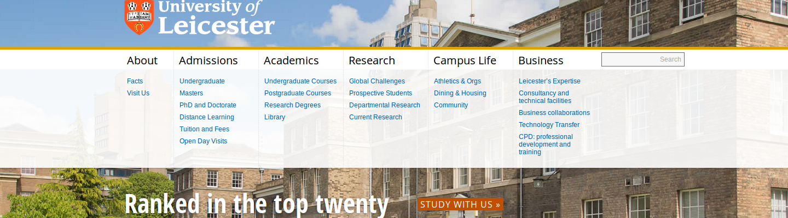

University of Leicester
Information Architecture and Redesign December 2014
University websites tend to hold information almost to excess. They are also host to a varied yet predictable audience: prospective students, parents, faculty, journalists, and so on. How could we satiate each of these user groups while ensuring the average user gets what they need quickly and in full?
Navigation
The most important part of organizing such a large quantity of information is the navigation. Our chosen navigation bar looks and behaves roughly the same between pages, so users can have a standby should they get lost while navigating.

We featured six top-level links that mostly correspond with the original site's priorities. When the user hovers over them, they expand to reveal full-size images.
Prospective students are a large, if not the largest user group for a university website. It's important to have some kind of Admissions portal as well as a more broad Academics portal that also serves current students.
Pug Adoption
Information Architecture and DesignDecember 2014